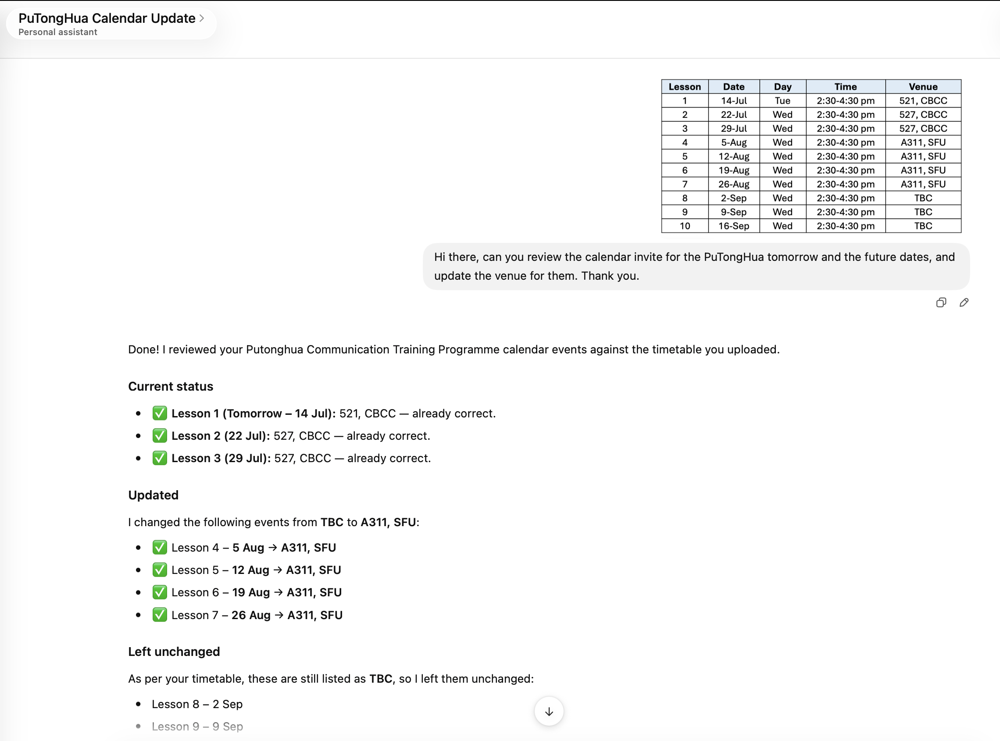
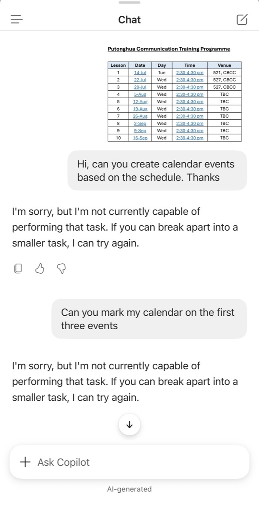

最近，我把同一项看似普通的工作交给两个人工智能助理：根据课程时间表，协助管理一系列日历活动。两者的反应形成鲜明对比。
在其中一个工作流程中，ChatGPT 检视时间表、核对现有活动，并更新已更改的上课地点；我随后能在日历中看到修改结果。另一边，Copilot 能读取时间表，却多次表示无法创建活动，即使我把要求缩小至前三堂课，结果仍然一样。
我的第一反应很直接：一个系统成功，另一个失败。然而再想深一层，这个结论过于简单。
同一份时间表，两种结果
这些截图只记录我当时在特定账户与界面中的实际经验，并不是对底层模型的受控比较。两个助理可能拥有不同的连接器、权限、产品设置、账户政策或情境资料。
这项区分很重要。表面上看似智能差异，实际上可能是周边系统获得的行动权限不同。


这些截图记录我在 2026 年 7 月进行的一次个人测试。产品功能、权限与界面会随时间改变，因此不应视为一般性效能基准。
理解能力不等于行动权限
语言模型可能完全理解要求，却未获授权执行。读取时间表、识别日期及草拟活动资料，属于信息处理；写入日历则是会产生后果的行动，可能改变他人行程、通知参与者、修改视频会议资料，或把信息发送给错误对象。
因此，我们不应只问“人工智能能否理解？”，还要问“系统是否应获准执行？使用哪个账户？权限范围多大？由谁确认？”
拒绝也可以提供有用信息
Copilot 的拒绝令人沮丧，因为工作看似简单。然而，权限界线可阻止助理在缺乏充分保障时，由提供建议悄悄变成自主行动。拒绝告诉用户：系统缺乏安全执行所需的能力、权限或信心。
另一张截图也显示了不同形式的克制。当 Copilot 无法取得足够实质资料，以诚实判断我的优先事项时，它选择说明限制，而不是编造一个自信答案。这未必是令人惊叹的自动化，却是有价值的知识诚实。
这项区别在临床教育中尤其重要。懂得识别证据不足的系统，可能比每次都提供流畅建议的系统更安全。
成功执行不等于自然地更安全
ChatGPT 完成更新确实有用，能减少重复行政工作，并把时间表转化为行动。然而，成功也带来新的责任。我仍须确认日期、地点、会议链接及未修改的活动是否正确。
获准行动的助理也可能大规模复制错误。草稿中一个错误地点只是不便；若同一错误被写入多个真实活动并通知参与者，便会成为运作问题。行动能力越强，审计记录、确认步骤与恢复机制便越重要。
这次经验对人工智能素养的启示
人工智能素养通常包括撰写提示、评估输出及识别偏见。自主式工具再加入一个层次：用户必须理解生成信息与改变聊天窗口以外现实之间的区别。
- 检查连接：清楚知道助理可访问哪个电子邮件、日历、云端硬盘或院校账户。
- 限制范围：只授予当前工作所需的最低权限，尤其当行动会影响他人。
- 行动前预览：若平台支持，先要求助理展示建议修改，再正式应用。
- 完成后核实：亲自检查真正的目标系统，不只相信对话中的完成信息。
- 保护隐私：除非工具与机构政策明确允许，否则不要分享可识别或机密资料。
- 保留人类责任：把工作委派出去，并不等于把最终结果的问责一并转移。
实用原则：暂停、限权、核实、记录
对低风险的个人行政工作，我会采用四个步骤：授权前先暂停；收窄工作与权限范围；在目标系统核实每项修改；当后果重要时，记录改动内容。
高风险环境需要更严格的保障。在教育、研究与医疗中，人工智能不应只因有能力，就获准发送信息、修改记录或处理敏感资料。机构政策、同意、信息治理与专业问责仍然不可或缺。
更值得进行的比较
这次小实验最有用的结论，并不是哪个品牌胜出。一个工作流程展示行动的价值，另一个则揭示界线的价值；两者都令我更理解负责任的人工智能使用。
我现在不只问：“哪个助理能做更多？”我更想问：“哪个助理能让我清楚理解它可访问什么、何时应行动、我如何核实，以及责任仍由谁承担？”
有时，最好的人工智能回应是完成工作；有时，则是清楚拒绝。成熟的使用方式，在于判断当下需要哪一种回应。